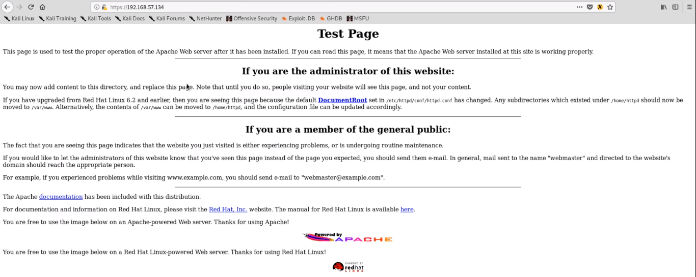

port 80 : http
port 443 : https
our koiptric machine ip address : 192.168.57.134
1. search on google
http:// [target ip address]
https:// [target ip address]
default page give us some info

as we can see on this default webpage we have some links
so walk through all links and use wappalyzer on each web page so we can get more info . \
\
apache 1.3.20 at 443
php
host name : kioptrix level1
smb2 (version 2)
Now we use one more tool : NIKTO
nikto: it is web vulnerability scanner . it is begineer friendly tool . when we pratcing against phunehub or on CTF .- but if website has good security then website automaticaly block nikto scan .
- nikto -h https://192.168.57.134
- and try
nikto -h http://192.168.57.134

this gives protection header information

this show list of outdated version

this shows which version is vulnerable to which kind of attack

this shows allowed HTTP methods [ TRACEmethod is active ]

we have some more tools like
dirbuster
dirb
gobuster
now, we are going to use one more tool
dirbuster: this is web application brute force
in terminal
it open a new window

enter target address
give brute force list path : usr/shr/wordlist/dirbuster/directory-list-2.3-small.txt
file extension : php,txt,doc,pdf,xlx,etc file type
and start scan
our scan depends on - wordlist size
- option to scan
- how website is cooperating
as output

this tool give directory structure format along with response code and response size
if response code or response size have high vaariation then we need to dig it more to get info